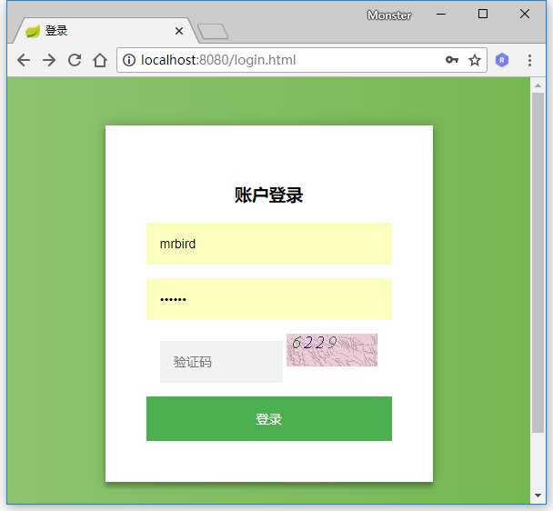
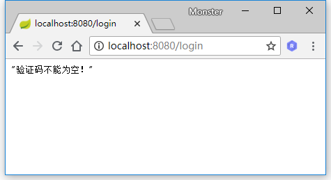
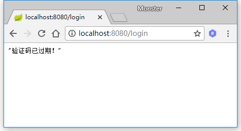
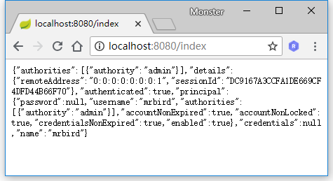

添加验证码大致可以分为三个步骤：根据随机数生成验证码图片；将验证码图片显示到登录页面；认证流程中加入验证码校验。Spring Security的认证校验是由UsernamePasswordAuthenticationFilter过滤器完成的，所以我们的验证码校验逻辑应该在这个过滤器之前。下面一起学习下如何在上一节Spring Security自定义用户认证的基础上加入验证码校验功能。
生成图形验证码
验证码功能需要用到spring-social-config依赖：
|
|
首先定义一个验证码对象ImageCode：
|
|
ImageCode对象包含了三个属性：image图片，code验证码和expireTime过期时间。isExpire方法用于判断验证码是否已过期。
接着定义一个ValidateCodeController，用于处理生成验证码请求：
|
|
createImageCode方法用于生成验证码对象，org.springframework.social.connect.web.HttpSessionSessionStrategy对象封装了一些处理Session的方法，包含了setAttribute、getAttribute和removeAttribute方法，具体可以查看该类的源码。使用sessionStrategy将生成的验证码对象存储到Session中，并通过IO流将生成的图片输出到登录页面上。
其中createImageCode方法代码如下所示：
|
|
生成验证码的方法写好后，接下来开始改造登录页面。
改造登录页
在登录页面加上如下代码：
|
|
<img>标签的src属性对应ValidateController的createImageCode方法。
要使生成验证码的请求不被拦截，需要在BrowserSecurityConfig的configure方法中配置免拦截：
|
|
重启项目，访问http://localhost:8080/login.html，效果如下：

认证流程添加验证码校验
在校验验证码的过程中，可能会抛出各种验证码类型的异常，比如“验证码错误”、“验证码已过期”等，所以我们定义一个验证码类型的异常类：
|
|
注意，这里继承的是AuthenticationException而不是Exception。
我们都知道，Spring Security实际上是由许多过滤器组成的过滤器链，处理用户登录逻辑的过滤器为UsernamePasswordAuthenticationFilter，而验证码校验过程应该是在这个过滤器之前的，即只有验证码校验通过后采去校验用户名和密码。由于Spring Security并没有直接提供验证码校验相关的过滤器接口，所以我们需要自己定义一个验证码校验的过滤器ValidateCodeFilter：
|
|
ValidateCodeFilter继承了org.springframework.web.filter.OncePerRequestFilter，该过滤器只会执行一次。
在doFilterInternal方法中我们判断了请求URL是否为/login，该路径对应登录form表单的action路径，请求的方法是否为POST，是的话进行验证码校验逻辑，否则直接执行filterChain.doFilter让代码往下走。当在验证码校验的过程中捕获到异常时，调用Spring Security的校验失败处理器AuthenticationFailureHandler进行处理。
validateCode的校验逻辑如下所示：
|
|
我们分别从Session中获取了ImageCode对象和请求参数imageCode（对应登录页面的验证码<input>框name属性）,然后进行了各种判断并抛出相应的异常。当验证码过期或者验证码校验通过时，我们便可以删除Session中的ImageCode属性了。
验证码校验过滤器定义好了，怎么才能将其添加到UsernamePasswordAuthenticationFilter前面呢？很简单，只需要在BrowserSecurityConfig的configure方法中添加些许配置即可：
|
|
上面代码中，我们注入了ValidateCodeFilter，然后通过addFilterBefore方法将ValidateCodeFilter验证码校验过滤器添加到了UsernamePasswordAuthenticationFilter前面。
大功告成，重启项目，访问http://localhost:8080/login.html，当不输入验证码时点击登录，页面显示如下：

当输入错误的验证码时点击登录，页面显示如下：
当页面加载60秒后再输入验证码点击登录，页面显示如下：

当验证码通过，并且用户名密码正确时，页面显示如下：

源码链接 https://github.com/wuyouzhuguli/SpringAll/tree/master/36.Spring-Security-ValidateCode